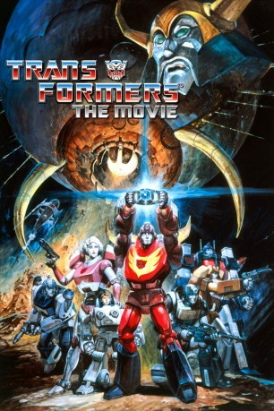

IMDB-Wertung: 7.3 / 10
IMDB-Wertung: 7.3 / 10  Metascore:
Metascore: 
Transformers - Der Kampf um Cybertron ist ein Animationsfilm aus dem Jahr 1986, welcher auf der gleichnamigen Fernsehserie basiert. Regie führte sowohl bei der TV-Serie als auch beim Film Nelson Shin.
Alternativ: The Transformers: The Movie (Englischer Titel)
 IMDB-Wertung: 7.3 / 10 Metascore:
Transformers - Der Kampf um Cybertron ist ein Animationsfilm aus dem Jahr 1986, welcher auf der gleichnamigen Fernsehserie basiert. Regie führte sowohl bei der TV-Serie als auch beim Film Nelson Shin.
Jahr: 1986
Dauer: 84 Minuten
FSK: 12
Land: USA Studio: DEGTonspuren: DD2.0 - ,
Untertitel:
Auflösung: 1080p (1920x1040) Größe: 4700 MB
Genre: Action, Sci-Fi, Abenteuer, Animation/Trick, Familie
Regisseur: Nelson Shin
Drehbuch: Ron Friedman
Soundtrack: Vince DiCola
Darsteller:
 Norman Alden als Kranix
Norman Alden als Kranix Michael Bell als Prowl / Scrapper / Swoop / Junkion
Michael Bell als Prowl / Scrapper / Swoop / Junkion Gregg Berger als Grimlock
Gregg Berger als Grimlock Corey Burton als Spike / Brawn / Shockwave
Corey Burton als Spike / Brawn / Shockwave Roger C. Carmel als Cyclonus / Quintesson Leader
Roger C. Carmel als Cyclonus / Quintesson Leader Peter Cullen als Optimus Prime / Ironhide
Peter Cullen als Optimus Prime / Ironhide Scatman Crothers als Jazz
Scatman Crothers als Jazz Walker Edmiston als Inferno (scenes deleted)
Walker Edmiston als Inferno (scenes deleted) Paul Eiding als Perceptor
Paul Eiding als Perceptor Eric Idle als Wreck-Gar
Eric Idle als Wreck-Gar Casey Kasem als Cliffjumper
Casey Kasem als Cliffjumper Don Messick als Gears (scenes deleted)
Don Messick als Gears (scenes deleted) Judd Nelson als Hot Rod / Rodimus Prime
Judd Nelson als Hot Rod / Rodimus Prime Leonard Nimoy als Galvatron
Leonard Nimoy als Galvatron Clive Revill als Kickback
Clive Revill als Kickback Neil Ross als Bonecrusher / Hook / Springer / Slag
Neil Ross als Bonecrusher / Hook / Springer / Slag Robert Stack als Ultra Magnus
Robert Stack als Ultra Magnus Lionel Stander als Kup
Lionel Stander als Kup Orson Welles als Unicron
Orson Welles als Unicron Frank Welker als Megatron / Soundwave / Rumble / Frenzy / Ravage / Wheelie / Auto-combatant / Junkion
Frank Welker als Megatron / Soundwave / Rumble / Frenzy / Ravage / Wheelie / Auto-combatant / Junkion Jack Angel als Astrotrain
Jack Angel als Astrotrain Ed Gilbert als Blitzwing
Ed Gilbert als BlitzwingDatei: X:\Kinder Filme (N-Z)\Transformers - Der Kampf um Cybertron (1986, FSK12, 1920x1040).mkv seit 18.01.2019
Festplatte: Kinder-Filme+Trick
 Es gibt insgesamt 87 Filme in der Gruppe 'Kinder Filme (N-Z)'
Es gibt insgesamt 87 Filme in der Gruppe 'Kinder Filme (N-Z)'